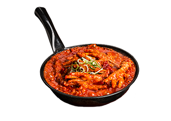
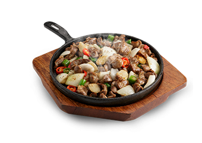
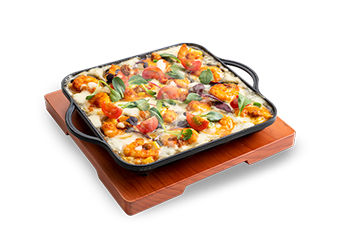
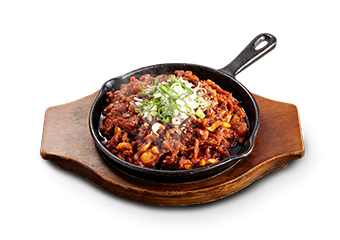
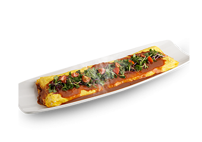
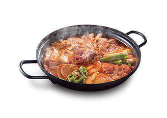

한신
이야기 : )
1980년~1990년 길거리에서
흔히 보이던 포장마차를 즐겨 찾던 시절,
항상 포장마차의 낭만과 분위기는
유지하되 더욱 깨끗한 실내와 위생적인
안주를 판매하는 포장마차의 모습을
머릿속으로 그려오던 중 포장마차의 장점을
살리고 단점을 보완한 대한민국 최초의
대형 실내 포장마차를 1998년 현실에 옮기게 되었습니다.
베스트
메뉴 : )
-

한신닭발
보글보글 끓여 먹는 매운 국물 닭발의 원조
-

한신통닭
통째로 튀겨 더욱 바삭하고 촉촉한 한신통닭
-

치즈돼지고추장바베큐
매콤한 바베큐와 고소한 모짜렐라 치즈의 완벽한조화
-

오돌뼈
한신포차의 특제소스로 볶아내 맛있게 매우면서 오돌오돌 씹는식감이 매력적
-

한신닭발
두툼한 계란말이에 체다치즈를 넣어 더욱 고소하고 부르러움
-

김치전골
잘 익은 김치와 돼지고기 그리고 스팸까지